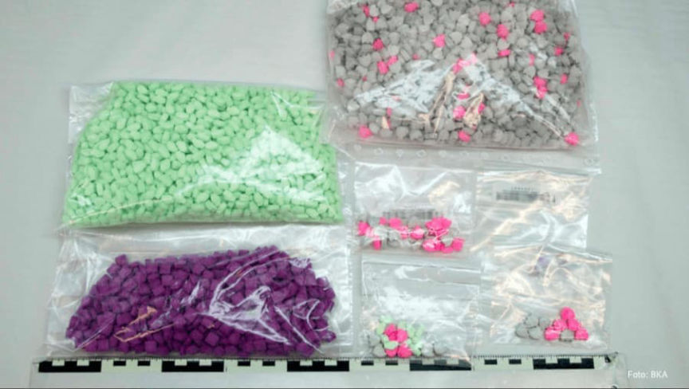
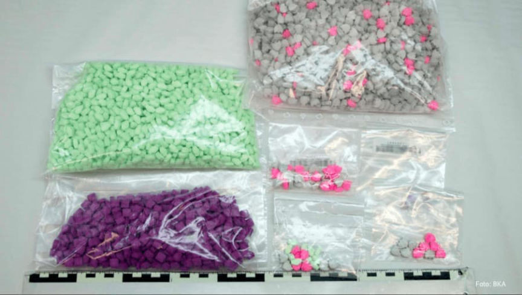

Seven Sentenced to Prison in Chemical Revolution Case
The Giessen Regional Court sentenced seven men to prison for their roles in a large-scale darkweb drug trafficking operation.
The court sentenced the seven defendants for selling drugs on the darkweb through the Chemical Revolution shop. Through the storefront, the group sold amphetamine, cannabis, MDMA, cocaine, heroin, and ecstasy, among others.
Conspirators operated Chemical Revolution from September 2017 to May 2018. The group sourced their drugs in the Netherlands. Group members transported drugs into Germany where they packaged them and shipped them to customers worldwide.

The seven defendants sentenced by the Giessen Regional Court are not the only defendants in the case; authorities arrested 11 suspects during the investigation into Chemical Revolution in May 2019. The German Federal Criminal Police Office and law enforcement in France led the investigation. The arrest of one 29-year-old defendant led to ten additional arrests. The 29-year-old had 50 kilograms of amphetamine, 16 kilograms of cannabis, 2 kilograms of MDMA, 900 grams of cocaine, 600 grams of heroin, and other drugs in his possession at the time of his arrest. Investigators learned that the 29-year-old stored drugs for Chemical Revolution.
On May 28, 2019, police arrested the creator and administrator of Chemical Revolution, resulting in the site’s closure.
The defendants were sentenced to prison terms ranging from two years and eight months to nine years and two months.
The court sentenced the seven defendants for selling drugs on the darkweb through the Chemical Revolution shop. Through the storefront, the group sold amphetamine, cannabis, MDMA, cocaine, heroin, and ecstasy, among others.
Chemical Revolution
Conspirators operated Chemical Revolution from September 2017 to May 2018. The group sourced their drugs in the Netherlands. Group members transported drugs into Germany where they packaged them and shipped them to customers worldwide.

Drugs seized during a raid at the house of a Chemical Revolution defendant
The seven defendants sentenced by the Giessen Regional Court are not the only defendants in the case; authorities arrested 11 suspects during the investigation into Chemical Revolution in May 2019. The German Federal Criminal Police Office and law enforcement in France led the investigation. The arrest of one 29-year-old defendant led to ten additional arrests. The 29-year-old had 50 kilograms of amphetamine, 16 kilograms of cannabis, 2 kilograms of MDMA, 900 grams of cocaine, 600 grams of heroin, and other drugs in his possession at the time of his arrest. Investigators learned that the 29-year-old stored drugs for Chemical Revolution.
On May 28, 2019, police arrested the creator and administrator of Chemical Revolution, resulting in the site’s closure.
The defendants were sentenced to prison terms ranging from two years and eight months to nine years and two months.